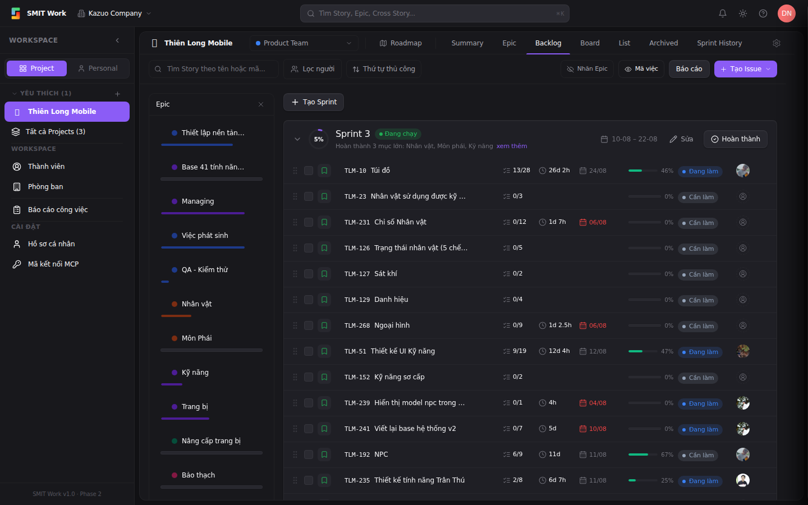
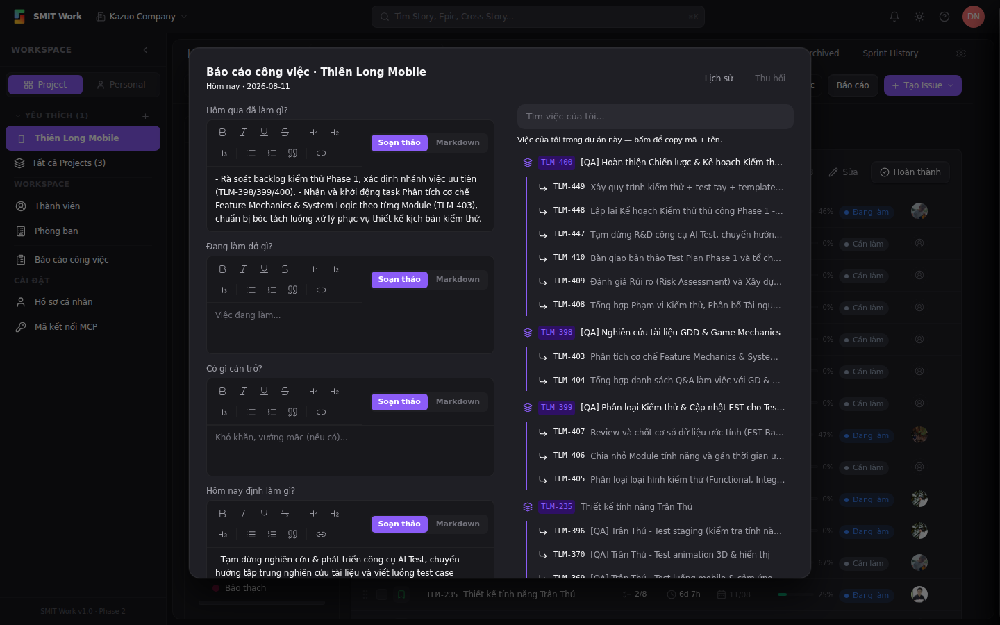
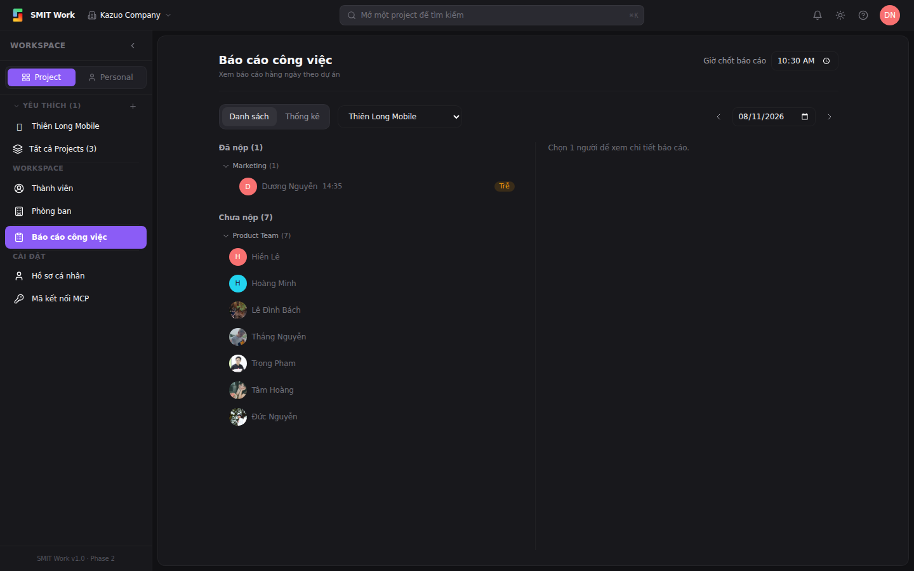

Báo cáo công việc giúp mỗi thành viên nộp báo cáo hằng ngày theo dự án (hôm qua làm gì, hôm nay làm gì, vướng mắc gì). Quản lý xem được ai đã nộp / chưa nộp, đúng giờ hay trễ. Có 2 nơi để dùng: nút Báo cáo nhanh ở Backlog, và trang Báo cáo công việc để xem tổng hợp.
Vào Project → Backlog. Ở góc phải thanh công cụ (cạnh nút + Tạo Issue) có nút Báo cáo.

Bấm nút Báo cáo → hộp thoại "Báo cáo công việc" mở ra cho ngày hôm nay. Điền các trường:

Ở menu trái chọn Báo cáo công việc (hoặc vào /w/kazuo/daily-reports). Trang này để theo dõi cả nhóm:
